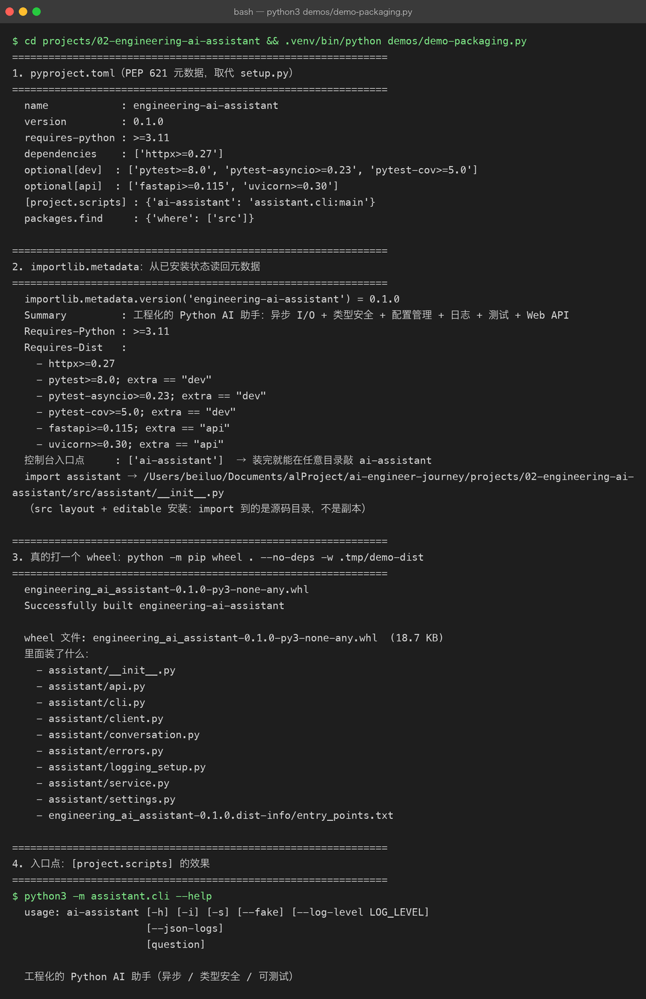

Project 02 — Chapter 08：Packaging【打包与发布】
状态：✅ 已校对 对应代码：
pyproject.toml
1. 项目要增加什么能力
到目前为止，运行项目的方式是：
cd projects/02-engineering-ai-assistant/src
python3 main.py "问题"这有三个问题：
问题 1：必须在 src/ 目录下才能跑（否则 import assistant 失败）
问题 2：别人 clone 下来，不知道要先装什么
问题 3：想复用这个包到别的项目，只能复制粘贴本章目标：
用
pyproject.toml把项目变成「可安装的包」，装完后在任意目录都能用ai-assistant命令。
2. 为什么需要这个知识
打包解决的是交付问题：
给自己 —— 装一次，之后在任何目录都能用，不用 cd
给同事 —— pip install -e . 之后依赖自动装齐
给用户 —— pip install ai-assistant 一条命令
给生产 —— Docker 镜像里 pip install . 是标准动作而且从这一章开始，你的项目才真正符合「Python 工程」的定义：
能被安装、能被依赖、有明确的入口点、依赖被显式声明。
3. 核心概念
3.1 pyproject.toml 是什么
它是 Python 官方（PEP 621）指定的项目元数据文件，取代了老的 setup.py。
类比：
| Java | Python |
|---|---|
pom.xml | pyproject.toml |
<groupId>:<artifactId>:<version> | name + version |
<dependencies> | dependencies = [...] |
<build><plugins> | [build-system] |
mvn package → jar | pip wheel . → whl |
mvn install | pip install -e . |
3.2 src layout【源码布局】
推荐的目录结构（本项目采用）：
projects/02-engineering-ai-assistant/
├── pyproject.toml
├── src/
│ └── assistant/ # 真正的包在这里
│ ├── __init__.py
│ ├── client.py
│ └── ...
└── tests/为什么多一层 src/？
不用 src/ 时：在项目根目录下 import assistant 会拿到「本地目录」而不是「安装的包」
测试通过但线上失败 —— 因为本地目录里可能混进了没提交的文件
用了 src/ ：必须先安装才能 import，测试环境 = 生产环境这个坑很隐蔽，业界共识是用 src/ layout 规避。
3.3 最小可用的 pyproject.toml
[build-system]
requires = ["setuptools>=68"]
build-backend = "setuptools.build_meta"
[project]
name = "engineering-ai-assistant"
version = "0.1.0"
description = "一个工程化的 Python AI 助手：异步、类型安全、可测试、带 Web API"
readme = "README.md"
requires-python = ">=3.11"
dependencies = [
"httpx>=0.27",
"python-dotenv>=1.0",
]
[project.optional-dependencies]
dev = [
"pytest>=8.0",
"pytest-asyncio>=0.23",
"pytest-cov>=5.0",
]
api = [
"fastapi>=0.115",
"uvicorn>=0.30",
]
[project.scripts]
ai-assistant = "assistant.cli:main"
[tool.setuptools.packages.find]
where = ["src"]关键点逐个解释：
| 字段 | 作用 |
|---|---|
requires-python | 声明最低版本，别人装的时候 pip 会检查 |
dependencies | 运行时依赖（不写死版本，用 >=） |
optional-dependencies | 分组可选依赖：pip install -e ".[dev,api]" |
[project.scripts] | 生成命令行命令：装完后直接敲 ai-assistant |
packages.find where | 配合 src layout 告诉 setuptools 去哪找包 |
3.4 [project.scripts] 的魔法
[project.scripts]
ai-assistant = "assistant.cli:main"意思是：装完后生成一个 ai-assistant 可执行文件，运行它 = 执行 assistant.cli 模块里的 main() 函数。
前提是你的 CLI 入口有 main 函数：
# src/assistant/cli.py
def main() -> None:
...
if __name__ == "__main__":
main()对应 Java 的：java -jar app.jar 里的 Main-Class，或者 Maven 生成的启动脚本。
3.5 editable install【可编辑安装】
pip install -e ".[dev,api]"-e（editable）的效果：
不是把代码复制进 site-packages
而是在 site-packages 里放一个「指向你源码目录」的链接
所以你改代码立刻生效，不用重装开发期间必须用 -e，否则你改一行代码就要重装一次。
3.6 依赖版本怎么写
httpx>=0.27 ✅ 下限即可，允许升级
httpx==0.27.0 ⚠️ 锁死：应用项目可以，库项目不该
httpx~=0.27 ✅ 兼容 0.27.x，不含 0.28
httpx ❌ 完全不约束，某天上游 breaking change 你就崩了规则：
给的约束能有多松就多松，但不能没有。
4. 项目代码
完整安装与使用流程：
cd projects/02-engineering-ai-assistant
python3 -m venv .venv
source .venv/bin/activate
pip install -e ".[dev,api]"
cp .env.example .env # 填入 DEEPSEEK_API_KEY
ai-assistant "用一句话解释 GIL" # 命令行入口
ai-assistant --interactive # 多轮对话
pytest -v # 测试依赖分组的意义：
只跑 CLI → pip install -e . （只装 httpx + dotenv）
要开发 → pip install -e ".[dev]" （+ pytest）
要起服务 → pip install -e ".[api]" （+ fastapi + uvicorn）为什么 FastAPI 放进可选依赖？因为只用 CLI 的人不该被迫装 Web 框架。

![真实运行：真的打出一个 wheel（18.7 KB）并列出里面的文件，以及 [project.scripts] 生成的 ai-assistant 控制台入口点](../assets/term-packaging-wheel.png)
5. Java ↔ Python 对比
| 概念 | Java / Maven | Python |
|---|---|---|
| 项目描述文件 | pom.xml | pyproject.toml |
| 坐标 | groupId:artifactId:version | name + version（无 group，全局唯一） |
| 依赖声明 | <dependency> | dependencies = [...] |
| 依赖作用域 | <scope>test</scope> | optional-dependencies.dev |
| 构建 | mvn package | python -m build |
| 产物 | .jar | .whl / .tar.gz |
| 安装到仓库 | mvn install | pip install . |
| 本地开发模式 | IDE 自动 | pip install -e . |
| 可执行入口 | Main-Class | [project.scripts] |
| 版本锁定 | pom 里写死 | requirements.txt / uv.lock / poetry.lock |
最大的文化差异：
Java 的依赖版本默认是锁死的，Python 默认给下限。 所以 Python 项目要发布上线时，通常会额外用
pip freeze > requirements.txt或uv生成锁文件。
6. 常见坑
坑 1：忘了 [tool.setuptools.packages.find] where = ["src"]
用 src layout 却没配这一句，结果是装上一个空包，import assistant 报 ModuleNotFoundError，但 pip install 显示成功。
排查：pip show -f engineering-ai-assistant 看装进去的文件列表。
坑 2：每个目录都要 __init__.py
src/assistant/
├── __init__.py ← 必须有（除非用 namespace packages）
├── client.py
└── service.py少了它，setuptools 可能找不到包，或者 import 行为诡异。
坑 3：忘了装 -e，改代码不生效
pip install . # ❌ 复制了一份，改源码没用
pip install -e . # ✅ 链接到源码症状：「我明明改了，怎么运行结果还是老的」——99% 是这个。
坑 4：命令找不到（ai-assistant: command not found）
原因：没激活虚拟环境，或者装到了别的 Python 里。
排查：
which ai-assistant # 应该在 .venv/bin/ 下
which python3 # 确认当前用的是哪个
pip show engineering-ai-assistant坑 5：把 tests/ 也打包进去
[tool.setuptools.packages.find]
where = ["src"] # 只找 src 下的，tests 在根目录所以不会被打包 ✅如果 tests 也在 src 下，要显式 exclude = ["tests*"]。
坑 6：.env 被打进包
.env 不在 packages.find 的范围内，不会被打包。但如果你用了 MANIFEST.in 手动包含文件，务必排除 .env。
7. 实战挑战
挑战 1：给项目加 pyproject.toml，用 pip install -e ".[dev,api]" 安装，验证在任意目录敲 ai-assistant --help 都能用。
挑战 2：加一个 --version 参数，从 importlib.metadata.version("engineering-ai-assistant") 读取版本号输出。
挑战 3（进阶）：用 python -m build 打出 wheel，然后在一个全新的 venv 里 pip install dist/*.whl 验证干净安装可用。
8. 主动回忆
pyproject.toml取代了什么老文件？- 为什么要 src layout？不用会有什么隐蔽的坑？
[project.scripts]做了什么？pip install -e .和pip install .的区别？- 依赖版本为什么「能松就松，但不能没有」？
- 为什么把 FastAPI 放进可选依赖？
9. 本节完成标准
- [ ] 有
pyproject.toml，pip install -e ".[dev,api]"成功 - [ ] 装完后在任意目录可执行
ai-assistant - [ ] 用 src layout，且
[tool.setuptools.packages.find] where = ["src"]已配 - [ ] 依赖分组：核心 / dev / api 三档
- [ ]
.gitignore含.venv/、dist/、*.egg-info/
下一章：09-fastapi.md —— 把 CLI 变成 HTTP 服务。